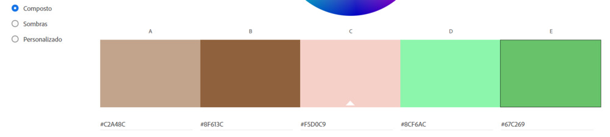
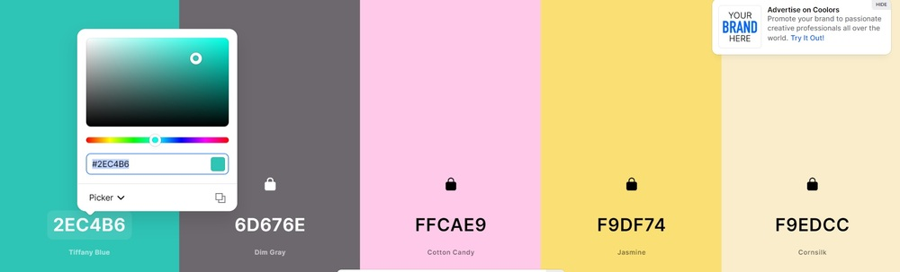
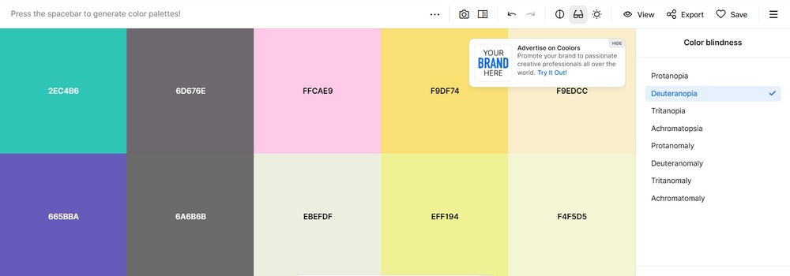

AVISO IMPORTANTE: PARA QUEM NÃO FEZ NADA DO SITE OU FEZ APENAS UMA PÁGINA, PARA ESSA ENTREGA VOCÊS OBRIGATORIAMENTE PRECISAM DE NO MÍNIMO TRÊS PÁGINAS E UM MENU NAS TRÊS: PÁGINA INICIAL, GALERIA E FALE CONOSCO.
O tema principal dessa atividade é paleta de cores em sites. Para essa entrega, vocês devem seguir os seguintes passos:
1º Passo: Definir a paleta de cores do seu site e escrever um código CSS (ou modificar o meu). Vocês devem também tirar um print da tela com a paleta de cores e criar um arquivo de imagem com esse print que deve ser incluído na pasta imagens. Essa imagem não precisa estar no site em si, mas no repositório sim. Lembrando que não é permitido o uso de qualquer paleta, existe um conjunto de regras que está detalhada nessa página. Todas as páginas do seu site devem estar linkadas a esse arquivo CSS. Leiam esse conjunto de regras para evitar penalizações.
2º Passo: Escolha uma página do seu site para ter uma formatação diferente do resto do padrão do site. Faça toda essa formatação utilizando CSS interno. Não tem ocorrências de CSS interno no meu repositório, então essa parte vocês vão ter que lembrar da aula.
3º Passo: Utilizar em alguma parte do seu site um CSS inline. Esse também não tem nenhuma ocorrência no meu repositório, então vocês vão ter que lembrar como faz.
Observação 1: Eu ia cobrar fonte de letra agora, mas vai ficar para a próxima entrega.
Observação 2: É importante que todo o conteúdo do site fique bem legível, e mudar as cores pode acabar deixando alguma coisa com a visibilidade prejudicada. Vocês devem verificar se alguma parte do site de vocês ficou com a visibilidade prejudicada e buscar resolver esse problema. No meu caso, por exemplo, a minha lista ficou com a visibilidade muito prejudicada, então tive que usar CSS para mudar as propriedades de formatação da lista. Meu plano inicial era mudar só parágrafos, body e títulos. Fiquem atentos a isso!
Nem toda combinação de cores é válida, existem algumas convenções e regras. Por convenção, existem certas combinações de cores que não agridem os olhos, e isso está muito ligado ao estudo da psicologia das cores, ramo da arquitetura/design. É claro que vocês não precisam entender a fundo essa parte, porque a disciplina é de desenvolvimento, não de design. Por isso, vamos cortar caminho e usar ferramentas que já entregam cores que são compatíveis. Abaixo terá duas ferramentas que vocês devem utilizar.
A primeira delas é a Adobe Color. Escolha uma regra de harmonia das cores e arraste um dos círculos pequenos para dentro de uma cor que você quer que esteja no seu site. Automaticamente, essa ferramenta irá aplicar a regra de harmonia que você escolheu para montar a paleta de cores.
Caso você não esteja contente com a combinação de cores, basta mudar a regra de harmonia. Mas atenção! Priorize regras de harmonia que entreguem cores com alto contraste, ou seja, fuja das regras de harmonia de cores que sejam muito claras e próximas uma das outras. Veja um exemplo de uma regra de harmonia que não possui um bom contraste entre cores.
A segunda ferramenta é a Coolors. Nela, ao apertar a barra de espaços será trocada todas as cores da tela. Ao encontrar uma cor que você quer no seu site, passe o mouse encima dela e clique na opção do cadeado. Depois continue apertando espaço até achar outra cor que você quer e repita o processo do cadeado. Faça isso até conseguir a paleta de cores que você quer para seu site.
Faremos essa conferência utilizando a ferramenta Coolors, mesmo se você tiver escolhido a sua paleta de cores usando Adobe Color.
Se você usou Adobe Colors, o que você vai ter que fazer é copiar o código hexadecimal de cada cor, ir na Coolors e colar esse código em cada cor, clicando no código delas para substituir.
A partir desse ponto todos devem então ter suas respectivas paletas de cores no Coolors, e faremos agora a conferência para cada tipo de daltônismo. Existem 4 tipos, aparece 8 nessa ferramenta porque para cada tipo tem o daltonismo parcial e total. Enfim, o que vocês devem fazer é clicar no ícone do óculos nesse site e selecionar cada um dos tipos de daltonismo, conferindo se alguma cor fica igual a outra. Se ficar, já era, essa paleta de cores é ruim e você vai ter que montar outra. Abaixo um exemplo de uma paleta de cores ruim, a terceira e quinta cor são a mesma para daltonismo do tipo Deuteranopia.
Montada e validada então a paleta de cores, seu site poderá utilizar essas 5 cores, além do preto e o branco. "Onde vou usar cada uma"? Você escolhe, muda o código CSS de uma forma, se ficar ruim você muda a ordem das cores, simples assim. Lembre-se que todas as informações do site devem continuar legíveis! Por isso que preto e branco estão presentes em todas as paletas de cores de sites.